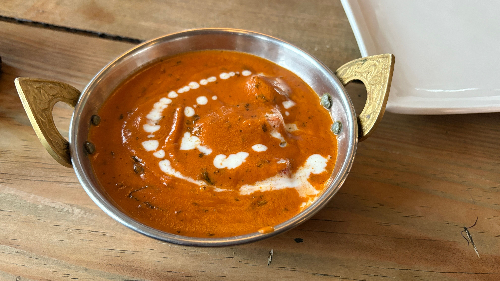

Home
Butter Chicken Recipe

Description:
Butter chicken is an Indian dish made with tender pieces of chicken in a rich and creamy sauce. It is popular due to its reputation for not being too thick or thin, and because the levels of sauce and spice can be adjusted to suit your own preferences.
Serve with a side of rice and naan bread for a complete meal.
Ingredients (Six servings):
- 1 onion, minced
- 1 cup butter
- 1 can of tomato sauce (15 oz)
- 3 cups of heavy cream
- 1 teaspoon of garam masala
- 1 teaspoon of cayenne pepper
- 2 tablespoons vegetable oil
- 2 tablespoons tandoori masala
- 1 tablespoon minced garlic
- 1 1/2 pounds boneless, skinless chicken breasts (cut into bite-sized pieces)
- 2 teaspoons salt
Steps:
- Gather ingredients and preheat oven to 375°F (190°C).
- Melt two tablespoons of butter in a large skillet over medium heat. Stir in onion and garlic and cook slowly until onion caramelizes (about 15 minutes).
- Meanwhile, combine tomato sauce, cream, salt, cayenne pepper, garam masala, and the remaining butter in a saucepan over medium-high heat until it comes to a simmer.
- Reduce the heat to medium-low and cover. Watch for it to simmer and stir occasionally for about 30 minutes. Then, stir in the caramelized onion.
- While the sauce is simmering, toss the chicken pieces with vegetable oil until coated. Season the pieces with tandoori masala and spread on a baking sheet.
- Bake the chicken in the preheated oven for about 12 minutes, or until cooked through and no longer pink in the center.
- Finally, stir the cooked chicken into the sauce, let simmer for 5 minutes, and serve.